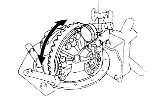
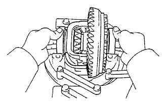
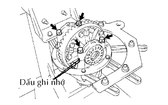
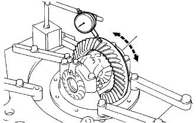
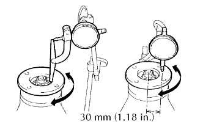

CỤM VỎ BỘ VI SAI SAU > LẮP LẠI |
| 1. LẮP HỘP VI SAI |
Lắp vòng đệm chặn bánh răng bán trục.
| Độ dày | Độ dày |
| 1.00 mm (0.039 in.) | 1.20 mm (0.047 in.) |
| 1.10 mm (0.043 in.) | 1.30 mm (0.051 in.) |
 |
Lắp 2 bánh răng bán trục (với vòng đệm dọc trục), 2 bánh răng vi sai, 2 vòng đệm dọc trục và trục bánh răng vi sai vào hộp vi sai.
Đo khe hở ăn khớp bánh răng bán trục.
Dùng một đồng hồ so, đo khe hở ăn khớp của bánh răng bán trục trong khi giữ một bánh răng vi sai về phía hộp vi sai.
Dùng đột chốt và một búa, đóng chốt thẳng qua hộp vi sai và lỗ của trục bánh răng vi sai.
Hãm hộp vi sai.
| 2. LẮP BÁNH RĂNG VÀNH CHẬU VI SAI |
Lau sạch các bề mặt tiếp xúc của hộp vi sai và bánh răng vành chậu.
Nung nóng bánh răng vành chậu trong nước sôi lên xấp xỉ 100°C (212°F).
Cẩn thận khi lấy bánh răng vành chậu ra khỏi nước sôi.
Sau khi hơi nước trên bánh răng vành chậu bay hơi hết, nhanh chóng lắp bánh răng vành chậu vào hộp bộ vi sai.
Hãy gióng thẳng dấu trên bánh răng vành chậu với dấu trên hộp vi sai.
Lắp tạm 5 tấm hãm mới và 10 bu lông.
Sau khi bánh răng vành chậu nguội, hãy lắp 10 bu lông bằng cách xiết các bu lông đối nhau một lượng đều nhau qua một vài lần.
Dùng một đục và búa, mở khoá 5 tấm hãm.
| 3. LẮP VÒNG BI HỘP VI SAI SAU |
Dùng SST và máy ép, lắp 2 vòng trong của vòng bi vi sai vào hộp vi sai.
| 4. KIỂM TRA ĐỘ ĐẢO CỦA BÁNH RĂNG VÀNH CHẬU |
|  |
Lắp hộp vi sai và 2 vòng bi (phía ngoài hộp vi sai lên vỏ vi sai, và lắp 2 đai ốc điều chỉnh sao cho không có độ rơ của vòng bi.
Lắp 2 nắp vòng bi bằng 4 bulông.
Dùng đồng hồ so, kiểm tra độ đảo của bánh răng vành chậu.
Tháo 2 nắp vòng bi, 2 đai ốc điều chỉnh và hộp vi sai.
| 5. LẮP CHẮN BỤI CỦA BỘ VI SAI SAU |
Dùng SST và máy ép, ép chắn bụi mới vào.
| 6. LẮP VÒNG BI ĐŨA CÔN PHÍA TRƯỚC BÁNH RĂNG QUẢ DỨA |
Dùng SST và một búa, đóng vành chứa dầu mới vào.
Dùng SST và máy ép, ép vòng bi (bên ngoài) lên vỏ vi sai.
| 7. LẮP VÒNG BI ĐŨA CÔN PHÍA SAU BÁNH RĂNG QUẢ DỨA |
Dùng SST và máy ép, ép vòng bi (bên ngoài) lên vỏ vi sai.
| 8. LẮP VÒNG BI ĐŨA CÔN PHÍA SAU BÁNH RĂNG QUẢ DỨA |
Lắp đệm phẳng vào bánh răng quả dứa.
Dùng SST và máy ép, ép vòng bi đũa (bên trong) lên bánh răng vành chậu.
| 9. ĐIỀU CHỈNH TẢI TRỌNG BAN ĐẦU BÁNH RĂNG QUẢ DỨA BỘ VI SAI |
 |
Lắp bánh răng quả dứa, vòng bi đũa côn (bên trong) phía trước bánh răng quả dứa và vành dầu bánh răng quả dứa.
Dùng SST, lắp bích nối.
Điều chỉnh tải trọng ban đầu bánh răng quả dứa bằng cách xiết đai ốc bích nối.
Dùng SST giữ bích nối, xiết chặt đai ốc.
Dùng cân lực, đo tải trọng ban đầu.
| Vòng bi | Điều kiện tiêu chuẩn |
| Vòng bi mới | 1.37 đến 2.06 N*m (14 đến 21 kgf*cm, 12.1 đến 18.2 in.*lbf) |
| Vòng bi cũ | 0.59 đến 0.98 N*m (6 đến 10 kgf*cm, 5.2 đến 8.7 in.*lbf) |
| 10. LẮP CỤM HỘP VI SAI |
|  |
Đặt hộp vi sai và 2 vòng bi (bên ngoài) lên vỏ vi sai.
| 11. LẮP ĐAI ỐC ĐIỀU CHỈNH VÒNG BI BỘ VI SAI SAU |
Lắp 2 đai ốc điều chỉnh vào vỏ bộ vi sai, chắc chắn rằng các đai ốc đã khớp vào ren chính xác.
| 12. KIỂM TRA VÀ ĐIỀU CHỈNH KHE HỞ ĂN KHỚP CỦA BÁNH RĂNG VÀNH CHẬU VÀ BÁNH RĂNG QUẢ DỨA VI SAI |
|  |
Gióng thẳng các dấu ghi nhớ trên nắp bạc và vi sai.
Lắp các nắp vòng bi bên trái và bên phải bằng 4 bu lông.
Nới lỏng 4 bu lông nắp vòng bi đến điểm mà các đai ốc điều chỉnh có thể vặn được bằng SST.
Dùng SST, xiết đai ốc điều chỉnh bên phía bánh răng vành chậu cho đến khi vành chậu có khe hở ăn khớp khoảng 0.2 mm.
Trong khi quay bánh răng vành chậu, hãy dùng SST để xiết chặt hoàn toàn đai ốc điều chỉnh bên phía bánh răng quả dứa. Sau khi các vòng bi đã ổ định, hãy nới lỏng đai ốc điều chỉnh bên phía bánh răng quả dứa.
Dùng SST, xiết đai ốc điều chỉnh đi từ 1 đến 1.5 vạch ra khỏi vi trí tải trọng ban đầu bằng 0.
Dùng một đồng hồ so, điều chỉnh khe hở ăn khớp của bánh răng vành chậu cho đến khi nó đạt đến giá trị tiêu chuẩn.
Xiết chặt các bulông nắp vòng bi.
| 13. KIỂM TRA TỔNG TẢI TRONG BAN ĐẦU |
Dùng cờlê cân lực, đo tải trọng ban đầu với răng của bánh răng quả dứa và bánh răng vành chậu đang tiếp xúc.
| 14. KIỂM TRA VẾT TIẾP XÚC GIỮA BÁNH RĂNG VÀNH CHẬU VÀ BÁNH RĂNG QUẢ DỨA |
 |
Bôi chì màu đỏ lên 3 hoặc 4 răng tại 3 vị trí khác nhau trên bánh răng vành chậu.
Giữ chắc bích nối ở vị trí đó và quay bánh răng vành chậu theo cả hai hướng.
Kiểm tra vết tiếp xúc răng.
| Độ dày | Độ dày |
| 2.24 mm (0.0088 in.) | 2.51 mm (0.0099 in.) |
| 2.27 mm (0.0089 in.) | 2.54 mm (0.0100 in.) |
| 2.30 mm (0.0091 in.) | 2.57 mm (0.0101 in.) |
| 2.33 mm (0.0092 in.) | 2.60 mm (0.0102 in.) |
| 2.36 mm (0.0093 in.) | 2.63 mm (0.0104 in.) |
| 2.39 mm (0.0094 in.) | 2.66 mm (0.0105 in.) |
| 2.42 mm (0.0095 in.) | 2.69 mm (0.0106 in.) |
| 2.45 mm (0.0096 in.) | 2.72 mm (0.0107 in.) |
| 2.48 mm (0.0097 in.) | - |
| 15. THÁO ĐAI ỐC HÃM BÁNH RĂNG QUẢ DỨA |
 |
Dùng SST và búa, mở khoá hãm của đai ốc.
 |
Dùng SST giữ bích nối, tháo đai ốc.
| 16. THÁO MẶT BÍCH NỐI CỦA BÁNH RĂNG QUẢ DỨA |
| 17. THÁO BỘ VĂNG DẦU BÁNH RĂNG QUẢ DỨA VI SAI SAU |
| 18. THÁO VÒNG BI ĐŨA CÔN PHÍA TRƯỚC BÁNH RĂNG QUẢ DỨA |
 |
Dùng SST, tháo vòng bi đũa (bên ngoài) ra khỏi vỏ vi sai.
Dùng thanh đồng và một búa, đóng vành chứa dầu ra khỏi vỏ vi sai.
| 19. LẮP BẠC CÁCH VÒNG BI BÁNH RĂNG QUẢ DỨA VI SAI SAU |
 |
Lắp bạc cách vòng bi mới vào bánh rănh quả dứa.
| 20. LẮP VÒNG BI ĐŨA CÔN PHÍA TRƯỚC BÁNH RĂNG QUẢ DỨA |
|
| 21. LẮP BỘ VĂNG DẦU BÁNH RĂNG QUẢ DỨA VI SAI SAU |
| 22. LẮP PHỚT DẦU CỤM VI SAI SAU |
Bôi mỡ MP lên lợi của phớt dầu mới.
Dùng SST và một búa, đóng phớt chắn dầu vào.
| 23. LẮP MẶT BÍCH NỐI CỦA BÁNH RĂNG QUẢ DỨA |
Dùng SST, lắp mặt bích vào bánh răng quả dứa.
Bôi dầu bánh răng hypoid LSD lên ren của đai ốc mới.
Dùng SST giữ mặt bích, xiết chặt đai ốc.
| 24. KIỂM TRA TẢI TRỌNG BAN ĐẦU CỦA BÁNH RĂNG QUẢ DỨA |
 |
Dùng cờlê cân lực, đo khe hở ăn khớp giữa bánh răng quả dứa và bánh răng vành chậu.
| Vòng bi | Điều kiện tiêu chuẩn |
| Vòng bi mới | 1.37 đến 2.06 N*m (14 đến 21 kgf*cm, 12.1 đến 18.2 in.*lbf) |
| Vòng bi cũ | 0.59 đến 0.98 N*m (6 đến 10 kgf*cm, 5.2 đến 8.7 in.*lbf) |
| 25. KIỂM TRA TỔNG TẢI TRONG BAN ĐẦU |
|
Dùng cân lực, đo tải trọng ban đầu.
| 26. KIỂM TRA KHE HỞ ĂN KHỚP BÁNH RĂNG VÀNH CHẬU |
|  |
Dùng đồng hồ so, kiểm tra khe hở ăn khớp của bánh răng vành chậu.
| 27. KIỂM TRA ĐỘ ĐẢO CỦA BÍCH NỐI BÁNH RĂNG QUẢ DỨA |
|  |
Dùng một đồng hồ so, đo độ đảo của bích nối của bánh răng quả dứa theo phương thẳng đứng và nằm ngang.
| Độ đả | Điều kiện tiêu chuẩn |
| Độ đả | 0.10 mm (0.0039 in.) |
| Độ đảo ngang | 0.10 mm (0.0039 in.) |
| 28. HÃM ĐAI ỐC BÁNH RĂNG QUẢ DỨA |
 |
Dùng một đục và búa, khoá hãm đai ốc.
| 29. LẮP KHOÁ HÃM ĐAI ỐC ĐIỀU CHỈNH VÒNG BI BỘ VI SAI SAU |
Lắp 2 hãm đai ốc điều chỉnh mới trên các nắp vòng bi bằng 2 bulông.
Bẻ cong hãm của đai ốc.